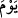
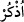
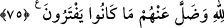
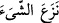
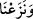
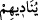
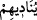
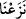
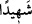

hani nerede? diyecektir.
“O gün Allah onları çağırarak:”
“__WORD__ (gün)” kelimesi, mukadder bir “__WORD__ (hatırla)” fiiliyle mensuptur. Yani, “Ey
Muhammed! Allah’ın müşriklere şöyle nidâ edeceği günü hatırla,” demektir.
Allah, müşrikleri azarlayarak: “Benim ortaklarım olduklarını iddiâ ettikleriniz hani
nerede? diyecektir.”
Bu ifâde, kınama ve azarlamadan sonra tekrar bir kınama ve azarlama cümlesidir.
Amacı şunu bildirmektir: Tevhidden daha etkili Allah’ın rızâsına sebep bir şey olmadığı
gibi, şirkten daha etkili de O’nun gazabını çeken, celbeden bir şey yoktur.
75. (O gün) her ümmetten bir şahit çıkarır, (kâfirlere): Kesin delilinizi getirin!
deriz. O zaman bilirler ki hakikat Allah’a âiddir ve uydura geldikleri şeyler
(putlar) da kendilerinden ayrılıp kaybolmuşlardır.
“(O gün) her ümmetten bir şahid” çekip “çıkarır,”
“
” ifâdesi, birşeyi olduğu yerden çekip çıkardı, demektir. Yayı ortasından
tutup çekmek gibi. “__WORD__ (çekip çıkardık)” ifâdesi; “__WORD__ (onlara nidâ eder)” fiili
üzerine atfedilmiştir. Mâzi sîgası tahkike delalet etmek için kullanılır. Fiilin gâibten (__WORD__) mütekellim sîgasına (__WORD__) geçmesi (iltifât); ‘çekip çıkarma’nın önemine işâret
etmek içindir. Yani, biz her ümmetten bir şâhid çıkarırız, demektir. Bu “şâhid”, her
ümmetin kendi peygamberidir; ümmetlerinin işlediği hayır ve şer amellerine şâhidlik
ederler.
Bazıları demiştir ki: Her peygamber, kendi zamanındakilere ve kendisinden sonra
gelen ümmetlere şâhidlik eder. Nitekim bir hadiste rivâyet edildiğine göre; ümmetinin
amelleri Rasûlullah (s.a.)’e Pazartesi ve Perşembe geceleri arzolunur.
Bazıları da demiştir ki: Buradaki “__WORD__ (şâhid)” ile her ümmetin âdil kimseleri
kasdedilmiştir. Çünkü Hak Teâlâ hiç bir asrı, din işinde kendilerine başvurulacak âdil
kimselerden hâlî bırakmamıştır. Onlar insanlara huccet olurlar, onları dine dâvet ederler
ve onların işledikleri isyan fiillerine de şâhidlik ederler.
Her bir ümmete “(kâfirlere):” kendilerine duâ ettiğiniz ortakların doğruluğuna “kesin
delilinizi getirin! deriz. O zaman” bilirler ki” ulûhiyette “hakikat” yâni ilâhlık hakkı
yalnızca “Allah’a âiddir,” bu konuda O’na hiçbir şey ortak değildir “ve” dünyada
“uydurageldikleri” bâtıl “şeyler (putlar) da kendilerinden ayrılıp kaybolmuşlardır.”